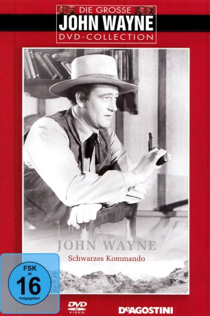

#9533 Schwarzes Kommando
Alternativ: Dark Command
Auszeichnungen: für 2 Oscars nominiert
 
 IMDB-Wertung: 6.9 / 10
IMDB-Wertung: 6.9 / 10  Metascore: 0
Metascore: 0 
Der machtgierige Lehrer Will Cantrell muss sich bei der Wahl zum Marshal dem Cowboy Bob Seton geschlagen geben. Zudem buhlt der frischgebackene Gesetzeshüter um die Gunst der schönen Bankierstochter Mary McCloud, die Cantrell für sich gewinnen will. Schon bald zeigt sich, dass der Lehrer etwas verbirgt und in kriminelle Handlungen verwickelt ist.
Jahr: 1940
Dauer: 93 Minuten
FSK: 16
Land: USA Studio: ITonspuren:
Untertitel: Deutsch,
Auflösung: 1080p (1488x1080) Größe: 7813 MB
Genre: Drama, Western, Liebe
Regisseur: Raoul Walsh
Drehbuch: Grover Jones, Lionel Houser, F. Hugh Herbert, W.R. Burnett, Jan Fortune
Soundtrack: Victor Young
Darsteller:
 Claire Trevor als Mary McCloud
Claire Trevor als Mary McCloud John Wayne als Bob Seton
John Wayne als Bob Seton Walter Pidgeon als William 'Will' Cantrell
Walter Pidgeon als William 'Will' Cantrell- Roy Rogers als Fletch McCloud
- George 'Gabby' Hayes als Doc Grunch
 Porter Hall als Angus McCloud
Porter Hall als Angus McCloud- Marjorie Main als Mrs. Cantrell / Mrs. Adams
- Raymond Walburn als Judge Buckner
 Joe Sawyer als Bushropp
Joe Sawyer als Bushropp- Helen MacKellar als Mrs. Hale
- J. Farrell MacDonald als Dave
 Trevor Bardette als Mr. Hale
Trevor Bardette als Mr. Hale- Ernie Adams als Townsman (uncredited)
 Richard Alexander als Phil - Guerrilla Guarding Seton (uncredited)
Richard Alexander als Phil - Guerrilla Guarding Seton (uncredited) Hank Bell als Townsman (uncredited)
Hank Bell als Townsman (uncredited) Ray Bennett als Guerrilla (uncredited)
Ray Bennett als Guerrilla (uncredited) Stanley Blystone als Tough (uncredited)
Stanley Blystone als Tough (uncredited)- Ed Brady als Juror (uncredited)
 Al Bridge als Slave Trader (uncredited)
Al Bridge als Slave Trader (uncredited) Roy Bucko als Brawler (uncredited)
Roy Bucko als Brawler (uncredited)- Budd Buster als Townsman (uncredited)
 Yakima Canutt als Townsman on Balcony (uncredited)
Yakima Canutt als Townsman on Balcony (uncredited)- Bob Card als Townsman (uncredited)
- Horace B. Carpenter als Townsman (uncredited)
 Noble 'Kid' Chissell als Guerrilla (uncredited)
Noble 'Kid' Chissell als Guerrilla (uncredited)- Edmund Cobb als Juror #3 (uncredited)
 Tex Cooper als Townsman (uncredited)
Tex Cooper als Townsman (uncredited) Harry Cording als Angry Townsman in Bank (uncredited)
Harry Cording als Angry Townsman in Bank (uncredited)- John Dilson als Town Leader (uncredited)
- Edward Earle als Town Leader (uncredited)
 Herman Hack als Townsman (uncredited)
Herman Hack als Townsman (uncredited) Frank Hagney als Tough Yankee #2 (uncredited)
Frank Hagney als Tough Yankee #2 (uncredited) Edward Hearn als Jury Foreman (uncredited)
Edward Hearn als Jury Foreman (uncredited)- Howard C. Hickman als Southerner Orating for Votes (uncredited)
 Lloyd Ingraham als Townsman (uncredited)
Lloyd Ingraham als Townsman (uncredited)- Jack Kirk als Guerrilla (uncredited)
 Ethan Laidlaw als Guerrilla (uncredited)
Ethan Laidlaw als Guerrilla (uncredited) Tom London als Messenger (uncredited)
Tom London als Messenger (uncredited)- Walter Long als Townsman (uncredited)
 Cactus Mack als Townsman (uncredited)
Cactus Mack als Townsman (uncredited)- Nelson McDowell als Farmer (uncredited)
- Joe McGuinn als Guerrilla (uncredited)
- John Merton als Cantrell Man (uncredited)
- Jack Montgomery als Guerrilla (uncredited)
- Jack Rockwell als Assassin of Angus McCloud (uncredited)
 Tom Smith als Posse Rider (uncredited)
Tom Smith als Posse Rider (uncredited) Harry Strang als Man About to Withdraw Money from Bank (uncredited)
Harry Strang als Man About to Withdraw Money from Bank (uncredited) Glenn Strange als Tough Yankee #1 (uncredited)
Glenn Strange als Tough Yankee #1 (uncredited)- Hal Taliaferro als Angry Townsman in Bank (uncredited)
- Al Taylor als Guerrilla (uncredited)
Datei: X:\HD-Western-Collections\John Wayne\Schwarzes Kommando (1940, FSK16, 1488x1080).mkv seit 06.09.2018
Festplatte: HD Eastern+Western
 Es gibt insgesamt 34 Filme in der Gruppe 'HD-Western-Collections\John Wayne'
Es gibt insgesamt 34 Filme in der Gruppe 'HD-Western-Collections\John Wayne'